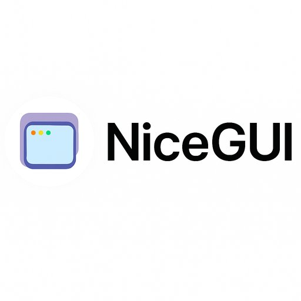
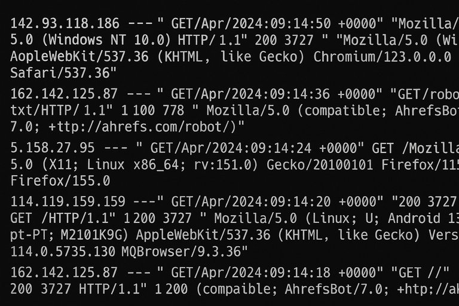
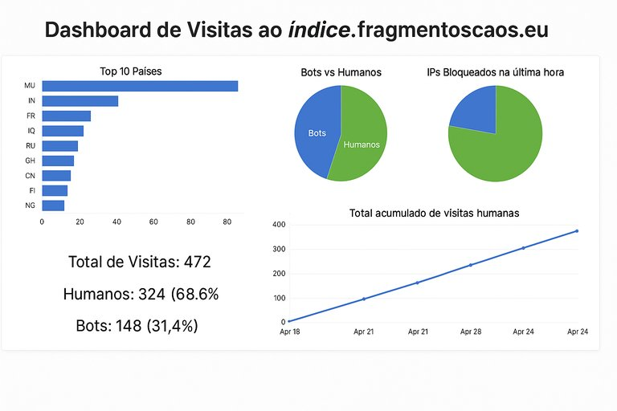

Soluções Inteligentes para Análise de Logs de Web Server
Publicado em 2025-06-30 15:33:01

A análise de logs de servidores web é uma prática essencial para empresas que pretendem proteger os seus recursos digitais, compreender o comportamento dos utilizadores e otimizar a experiência online. Com ferramentas modernas em Python e interfaces como a NiceGUI, é possível criar soluções automáticas e visuais para esta tarefa.
Recolha e Enriquecimento de Dados
Os servidores Apache e Nginx geram registos (logs) que incluem IPs, timestamps, métodos HTTP, URLs e user agents. Com Python, podemos:
Ler e interpretar logs com expressões regulares.
Geolocalizar IPs com APIs como ip-api.com.
Classificar acessos entre bots e humanos.
Detectar abusos e tomar ação automatizada (ex: bloqueio via iptables).

Visualização com NiceGUI
A biblioteca NiceGUI permite criar dashboards web interativos com gráficos informativos:
📊 Distribuição geográfica dos visitantes (Top 10 países).
🧠 Percentagem de bots vs humanos.
📈 Evolução temporal das visitas humanas.
🔒 Percentagem de IPs bloqueados na última hora.
📋 Tabela interativa dos últimos acessos.

Vantagens para Equipas Técnicas
Estas soluções trazem vários benefícios:
Monitorização em tempo real.
Deteção automatizada de comportamentos maliciosos.
Melhoria de desempenho ao reduzir o tráfego não desejado.
Apoio à tomada de decisão com base em dados visuais.
Conclusão
Ferramentas como esta representam uma evolução natural na gestão de sistemas e segurança web. Com código simples, APIs acessíveis e interfaces modernas, qualquer administrador pode transformar logs em insights valiosos.🔗 Criado com apoio do gptonline.ai — soluções inteligentes em português. |